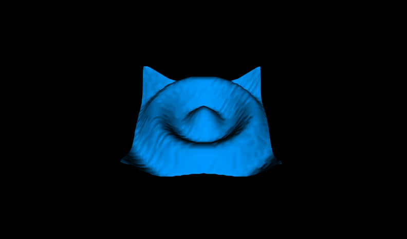

See: Description
| Class | Description |
|---|---|
| Figure14_2ElevationGridMountain |
A mountain using a 9x9 ElevationGrid.
|
| Figure14_3ElevationGridRibbon |
A ribbon using a 20x2 elevation grid.
|
| Figure14_4aElevationGridPuddleSplash10x10 |
A puddle splash using a 10x10 elevation grid.
|
| Figure14_4bElevationGridPuddleSplash40x40 |
A puddle splash using a 40x40 elevation grid.
|
| Figure14_5ElevationGridTerrain |
An elevation grid built using an automatic terrain-generator application.
|
| Figure14_6ElevationGridMedallion |
A medallion built from 12 ElevationGrid ribbons.
|
ElevationGrid nodes provide a simple way to construct terrain-like geometry.
|  |
Building terrain sets is very common: hills, valleys, mountains and other tricky uses. An ElevationGrid geometry node creates terrains using xDimension and zDimension for grid size, with xSpacing and zSpacing for row and column distances, and then includes height elevations at each of the grid points. These X3D scenes are adapted directly from the original VRML 2.0 Sourcebook chapter examples. Also available: Introduction to VRML97 SIGGRAPH98 course notes. |
Copyright ©2005-2019 Web3D Consortium under an open-source license, free for any use. Feedback is welcome.